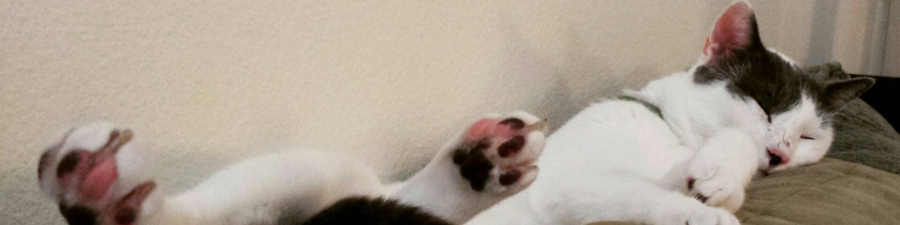

Our Shelter
We love cats, so much so, that we have a whole building full of cats you can take home, so you can fill your apartment with cats!

Adopt or Sponsor a Cat
Cats need love, and money. Sadly our revoulutionary Cat Kahkis were not a hit as cats hate pants but without a wallet cats cant has cheezeburger or catnip! Make donation today!

Ways to Help
Take a cat home, feed it and make it feel loved or maybe volunteer to help us out!